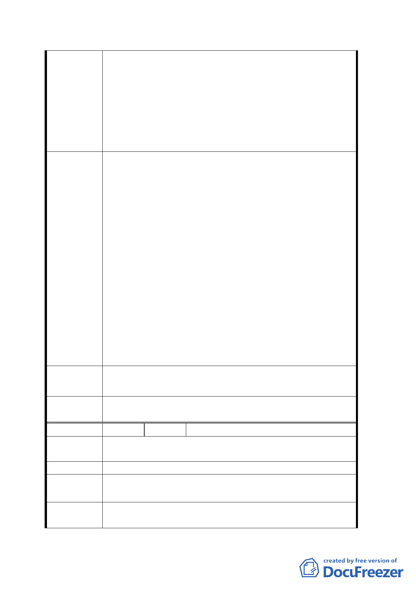

三、 查 93.02.27 及 93.03.30 出席之所謂「文昌公神明會代
表」，於 93.03.30 經台北市政府民政局出席官員證實
該神明會並未立案或登記，故在法律上應屬權屬未
定。該三人雖自稱代表，但並未提出會員名冊、會員
大會記錄及會員授權證明文件，於法律上應認定為無
代表權。綜觀前二述說明，該等於台北市政府捷運工
程局前述二次會議中所提之意思表示，應為無效之意
思表示。故請依本會代表人所提之意見為考量。
一、 應以捷運局之原訂計畫為優先考量不必捨近求遠，以
期發揮該局原設計應有之功能，並減少因變更該局原
訂計畫而增加之土地徵收（原計畫僅需徵收約三００
平方公尺，但使用本會現有土地反而需徵收達六一三
平方公尺）及工程費用，故建議該局不能因少數人陳
情而損失本市農民及市民大眾之權益。
二、 倘該局一定需使用八德路南側做為通風口、出入口，
本會建議應以本市松山區寶清段七小段 704、705 地
建議辦法
號土地（即華南銀行松山分行旁之既成巷道）及其相
鄰之人行道為優先考量。
三、 倘該局一定需使用本會賴以為生之三筆土地，請該局
應俟本會與文昌公神明會循司法程序取得判決確定
後，再行與該局聯合開發。以免損害本市農民、市民
大眾及本會之權益。
四、 捷運局雖於九十三年五月十二日協商會議中所提出
聯合開發四項方案，經本會理事會決議仍強烈不表贊
同。因已嚴重影響本會及本市農民大眾之權益。
專案小組審
查結論
同編號１。
委員會決議
本案原公展所擬變更第三種商業區土地為交通用地乙案，
依專案小組審查結論不予變更。
編 號 ５ 陳情人 林可迅（交二）
陳情理由
一、 以聯合開發來進行，有效利用土地。
二、 以調高公告現值、接近市價來徵收，以減少民怨。
建 議 辦 法 同上。
專案小組審
查結論
同編號１。
委員會決議
本案原公展所擬變更第三種商業區土地為交通用地乙案，
依專案小組審查結論不予變更。
三九